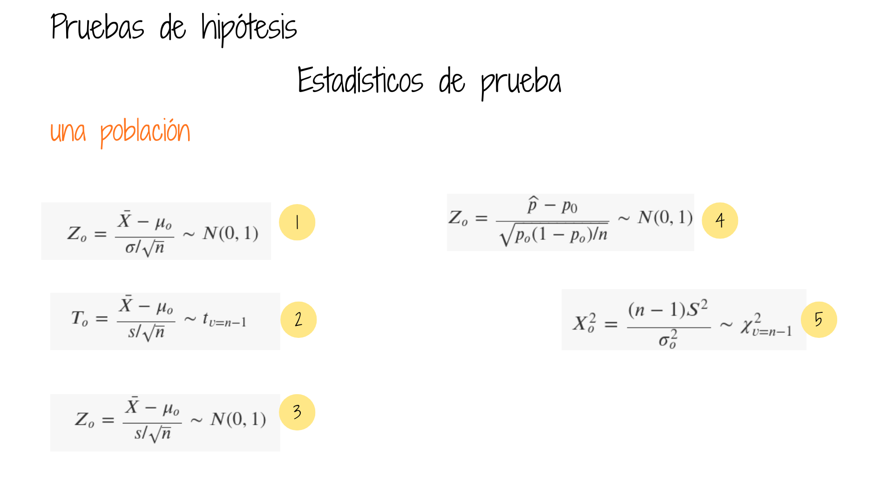
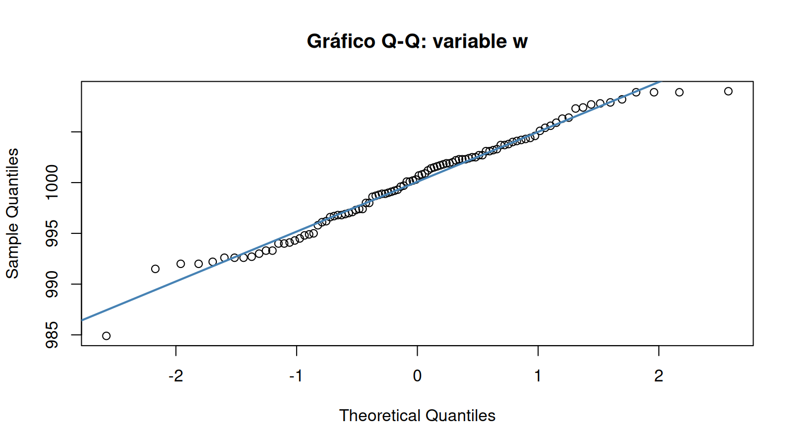
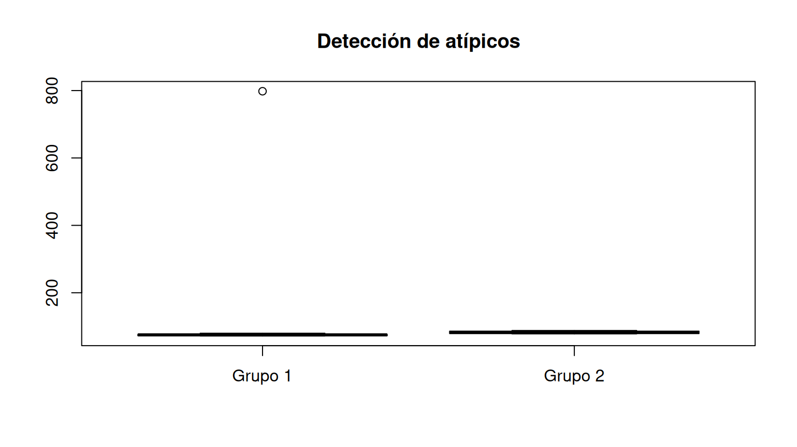
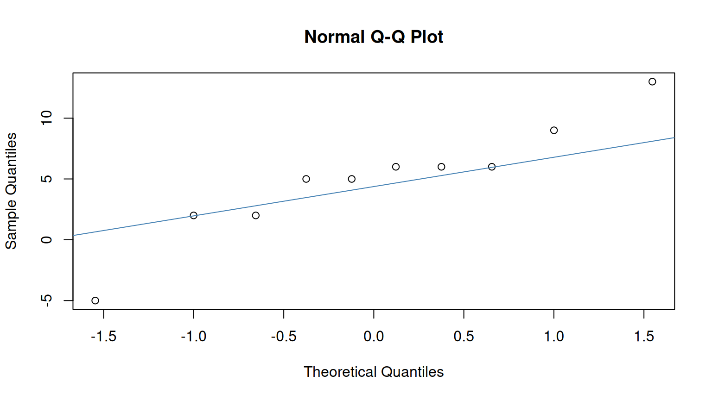
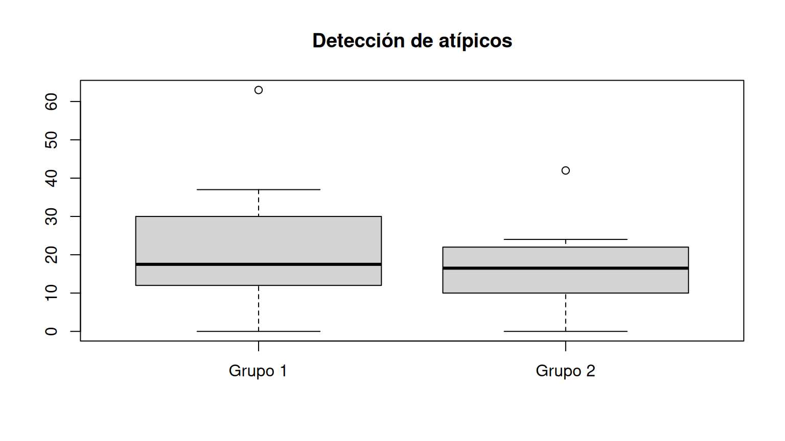
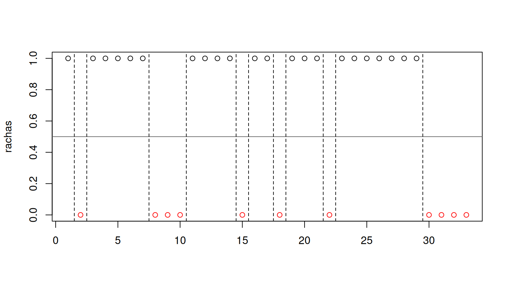
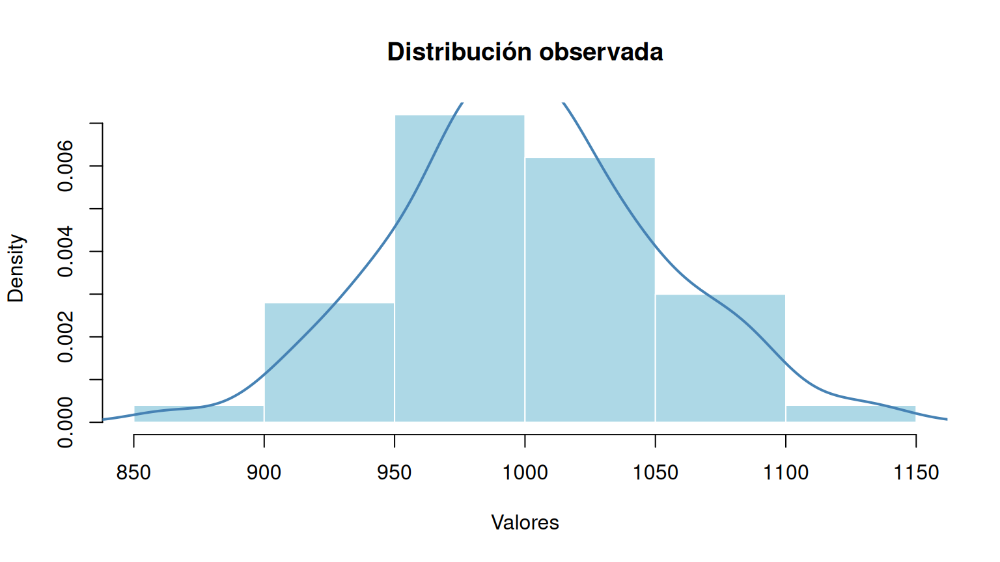
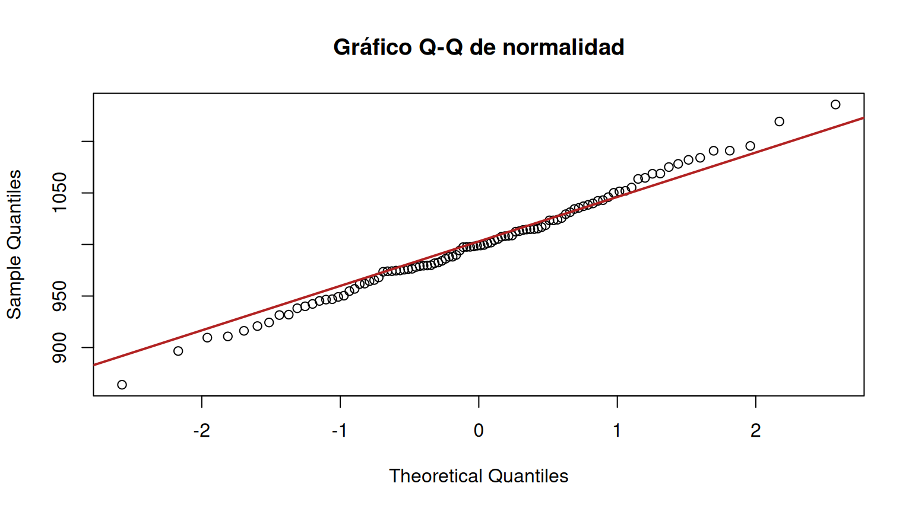

Estadística para la toma de decisiones
dgonzalez

Pruebas paramétricas
Pruebas de hipótesis sobre la media poblacional
Para seleccionar una prueba sobre la media poblacional es necesario distinguir el diseño muestral, el tamaño de muestra, el conocimiento de la varianza y los supuestos de distribución. La normalidad no debe comprobarse mecánicamente en todos los casos: su importancia depende del procedimiento y de la robustez de la prueba.

Ejemplo 1. Una media poblacional
Se desea contrastar \(H_0:\mu=1000\) frente a \(H_1:\mu\ne1000\).
w <- round(rnorm(100, mean=1000, sd=5), 1)
summary(w) Min. 1st Qu. Median Mean 3rd Qu. Max.
985 997 1000 1000 1003 1009 normalidad(w, "Variable w")Normalidad — Variable w
Shapiro-Wilk normality test
data: x
W = 0.98, p-value = 0.1
No se detecta evidencia suficiente contra la normalidad.qqnorm(w, main="Gráfico Q-Q: variable w"); qqline(w, col="steelblue", lwd=2)
Interpretación: Shapiro-Wilk contrasta \(H_0\): los datos proceden de una distribución normal, frente a \(H_1\): no proceden de una distribución normal. Si \(p<\alpha\), se rechaza la normalidad; en caso contrario, no se rechaza, pero tampoco se demuestra que sea verdadera. El resultado depende de la muestra simulada y se calcula cada vez que se ejecuta el código.
Cuándo usarla: es especialmente útil para muestras pequeñas cuando el método requiere normalidad. Con muestras grandes, una prueba de normalidad puede detectar desviaciones pequeñas sin importancia práctica; conviene revisar también el gráfico Q-Q, los valores extremos, la independencia y el tamaño muestral. El teorema central del límite puede justificar una aproximación para la media, pero no garantiza robustez ante colas extremadamente pesadas o dependencia.
Caso con variable con distribución normal y varianza conocida
Supuestos:
| \(X \sim N(\mu,\sigma^2)\) |
| Varianza conocida (\(\sigma^{2}=4\)) |
# Ilustración: sigma=2 debe ser un dato externo conocido,
# NO una estimación calculada con esta misma muestra.
sigma_conocida <- 2
z0 <- (mean(w)-1000)/(sigma_conocida/sqrt(length(w)))
p_z <- 2*pnorm(-abs(z0))
c(z=z0, valor_p=p_z) z valor_p
0.4200 0.6745 # Si sigma no es conocida, corresponde t.test(w, mu=1000).Alternativas para el planteamiento de las hipótesis
Podemos realizar pruebas de:
| Dos colas | Cola superior | Cola inferior |
|---|---|---|
| \(Ho\) : \(\mu = \mu_o\) | \(Ho\) : \(\mu \leq \mu_o\) | \(Ho\) : \(\mu \geq \mu_o\) |
| \(Ha\) : \(\mu \neq \mu_o\) | \(Ha\) : \(\mu > \mu_o\) | \(Ha\) : \(\mu < \mu_o\) |
Supuestos:
| \(X \sim N(\mu,\sigma^2)\) |
| Varianza desconocida |
Una varianza poblacional se considera conocida únicamente cuando existe información externa sólida que permite tratar a \(\sigma^2\) como parámetro especificado (por ejemplo, estudios previos muy fiables o un proceso estable y bien caracterizado). No es necesario ni habitual disponer de un censo.
En caso que los datos que tenemos para la varianza procedan de una muestra, el valor obtenido \(s^{2}\), corresponde a una estimación de la varianza y diremos que la varianza no se conoce y que la estimamos mediante los valores de una muestra.
| \(Ho\) : \(\mu \geq 5\) |
| \(Ha\) : \(\mu < 5\) |
#-------------------------------------------------------------------------------
# Problema 2
muestra_t=c(4.21,5.55,3.02,5.13,4.77,2.34,5.42,4.50,6.10,3.80,5.12,6.46,6.19,3.79,3.54)
mean(muestra_t)[1] 4.663sd(muestra_t)[1] 1.211normalidad(muestra_t, "Problema 2: una media")Normalidad — Problema 2: una media
Shapiro-Wilk normality test
data: x
W = 0.97, p-value = 0.9
No se detecta evidencia suficiente contra la normalidad.t.test(muestra_t,mu=5, alternative="less")
One Sample t-test
data: muestra_t
t = -1.1, df = 14, p-value = 0.1
alternative hypothesis: true mean is less than 5
95 percent confidence interval:
-Inf 5.213
sample estimates:
mean of x
4.663 | \(Ho\) : \(p \geq 0.76\) |
| \(Ha\) : \(p < 0.76\) |
#-------------------------------------------------------------------------------
#Problema 3
z=(24/40-.76)/(sqrt(.76*(1-.76)/40))
# Muestra binomial: no aplicar Shapiro-Wilk a la proporción.
# En H0: n*p0=30.4 y n*(1-p0)=9.6; revisar aproximación.
prop.test(24,40,p=0.76,alternative="less",correct=FALSE)
1-sample proportions test without continuity correction
data: 24 out of 40, null probability 0.76
X-squared = 5.6, df = 1, p-value = 0.009
alternative hypothesis: true p is less than 0.76
95 percent confidence interval:
0.0000 0.7171
sample estimates:
p
0.6 paqueteDEG::test.prop(24,40,p=0.76 , alternative="less", conf.level = 0.95)
One-sample z-test for proportion (summary stats)
data: summary: x = 24, n = 40
z = -2.4, n = 40, p-value = 0.009
alternative hypothesis: true proportion is less than 0.76
95 percent confidence interval:
0.0000 0.7274
sample estimates:
sample proportion
0.6 binom.test(24,40,p=0.76,alternative="less") # Contraste exacto
Exact binomial test
data: 24 and 40
number of successes = 24, number of trials = 40, p-value = 0.02
alternative hypothesis: true probability of success is less than 0.76
95 percent confidence interval:
0.0000 0.7306
sample estimates:
probability of success
0.6 | \(Ho\) : \(\mu_1 \geq \mu_2\) |
| \(Ha\) : \(\mu_1 < \mu_2\) |
#---------------------------------------------------------------------------------
# Problema 4
n1=36 ; mx1=6 ; sx1=4
n2=40 ; mx2=8.2; sx2=4.3
# Con solo resúmenes no se puede evaluar normalidad con Shapiro-Wilk.
# Verificar supuestos con los datos originales de cada grupo.
F=sx1^2/sx2^2
RdeRF=qf(c(0.025,0.975),35,39)
#t.test(x1,x2,mu=0, alternative = "less")
s2p=((n1-1)*sx1^2+(n2-1)*sx2^2)/(n1+n2-2)
sp=sqrt(s2p)
T4=(mx1-mx2)/(sp*sqrt(1/n1+1/n2))
RdeRT4=qt(0.05,(n1+n2-2))| \(Ho\) : \(\mu_{g1} \geq \mu_{g2}\) |
| \(Ha\) : \(\mu_{g1} < \mu_{g2}\) |
#-----------------------------------------------------------------------------------
# Problema 5
p5=3/40
z5=(p5-0.05)/sqrt(0.05*0.95/40)
#----------------------------------------------------------------------------------# Problema 6
g1=c(75,76,74,80,72,798,76,73,72,75)
# ATENCIÓN: 798 es un posible error de digitación; confirmar fuente.
# Se conserva el valor original para evitar corregir datos sin evidencia.
g2=c(86,78,86,84,81,79,78,84,88,80)
mean(g1);sd(g1)[1] 147.1[1] 228.7mean(g2);sd(g2)[1] 82.4[1] 3.658normalidad(g1,"Problema 6: grupo 1")Normalidad — Problema 6: grupo 1
Shapiro-Wilk normality test
data: x
W = 0.37, p-value = 1e-07
Evidencia contra la normalidad.normalidad(g2,"Problema 6: grupo 2")Normalidad — Problema 6: grupo 2
Shapiro-Wilk normality test
data: x
W = 0.91, p-value = 0.3
No se detecta evidencia suficiente contra la normalidad.boxplot(g1,g2,names=c("Grupo 1","Grupo 2"),main="Detección de atípicos")
# F clásica sensible a desviaciones de normalidad: usar solo si es justificable.
# var.test(g1,g2)
t.test(g1,g2, var.equal=FALSE) # Welch; interpretación condicionada al atípico
Welch Two Sample t-test
data: g1 and g2
t = 0.89, df = 9, p-value = 0.4
alternative hypothesis: true difference in means is not equal to 0
95 percent confidence interval:
-98.92 228.32
sample estimates:
mean of x mean of y
147.1 82.4 | \(Ho\) : \(p_1 = p_2\) |
| \(Ha\) : \(p_1 \neq p_2\) |
#---------------------------------------------------------------------------------
# Problema 7
n1=400 ;x1=80
n2=400 ; x2=88
# Comprobar éxitos y fracasos suficientes en ambos grupos.
prop.test(c(80,88),c(400,400), correct=FALSE)
2-sample test for equality of proportions without continuity correction
data: c(80, 88) out of c(400, 400)
X-squared = 0.48, df = 1, p-value = 0.5
alternative hypothesis: two.sided
95 percent confidence interval:
-0.07643 0.03643
sample estimates:
prop 1 prop 2
0.20 0.22 | \(Ho\) : \(\mu_1 \geq \mu_2\) |
| \(Ha\) : \(\mu_1 < \mu_2\) |
#-----------------------------------------------------------------------------------
# Problema 8
x1=c(45,73,46,124,30,57,83,34,26,17)
x2=c(36,60,44,119,35,51,77,29,24,11)
d=x1-x2
mean(d)[1] 4.9sd(d)[1] 4.725normalidad(d,"Problema 8: diferencias pareadas")Normalidad — Problema 8: diferencias pareadas
Shapiro-Wilk normality test
data: x
W = 0.93, p-value = 0.4
No se detecta evidencia suficiente contra la normalidad.qqnorm(d); qqline(d,col="steelblue")
t.test(x1,x2,paired=TRUE,alternative="less")
Paired t-test
data: x1 and x2
t = 3.3, df = 9, p-value = 1
alternative hypothesis: true mean difference is less than 0
95 percent confidence interval:
-Inf 7.639
sample estimates:
mean difference
4.9 # Si la normalidad de las diferencias no es plausible,
# y se justifica la simetría, considerar wilcox.test(x1,x2,paired=TRUE).| \(Ho\) : \(\mu_{pa} \geq \mu_{pd}\) |
| \(Ha\) : \(\mu_{pa} < \mu_{pd}\) |
#------------------------------------------------------------------------------------
#Problema 9
pa=c(104.5,89,84.5,106,90,96,79,90,85,76.5,91.5,82.5,100.5,89.5,121.5,72)
pd=c(98,85.5,85,103.5,88.5,95,79.5,90,82,76,89.5,81,99.5,86.5,115.5,70)
d=pa-pd
mean(d)[1] 2.062sd(d)[1] 2.032normalidad(d,"Problema 9: diferencias pareadas")Normalidad — Problema 9: diferencias pareadas
Shapiro-Wilk normality test
data: x
W = 0.91, p-value = 0.1
No se detecta evidencia suficiente contra la normalidad.t.test(pa,pd,paired=TRUE,alternative="less")
Paired t-test
data: pa and pd
t = 4.1, df = 15, p-value = 1
alternative hypothesis: true mean difference is less than 0
95 percent confidence interval:
-Inf 2.953
sample estimates:
mean difference
2.062 | Verificación de normalidad | Comparación de varianzas | Diferencia de medias |
|---|---|---|
| \(Ho\) : \(X_{g1} \sim norm\) | \(Ho\) : \(\sigma^{2}_{g1} = \sigma^{2}_{g2}\) | \(Ho\) : \(\mu_{g1} \geq \mu_{g2}\) |
| \(Ha\) : \(X_{g1} \not\sim N\) | \(Ha\) : \(\sigma^{2}_{g1} \neq \sigma^{2}_{g2}\) | \(Ha\) : \(\mu_{g1} < \mu_{g2}\) |
#-----------------------------------------------------------------------
# Problema 10
g1=c(37,19,21,35,16,4,0,12,63,25,12,15)
g2=c(24,42,18,15,0,9,10,20,22,13)
mean(g1);sd(g1)[1] 21.58[1] 17.02mean(g2);sd(g2)[1] 17.3[1] 11.21normalidad(g1,"Problema 10: grupo 1")Normalidad — Problema 10: grupo 1
Shapiro-Wilk normality test
data: x
W = 0.9, p-value = 0.2
No se detecta evidencia suficiente contra la normalidad.normalidad(g2,"Problema 10: grupo 2")Normalidad — Problema 10: grupo 2
Shapiro-Wilk normality test
data: x
W = 0.94, p-value = 0.5
No se detecta evidencia suficiente contra la normalidad.boxplot(g1,g2,names=c("Grupo 1","Grupo 2"),main="Detección de atípicos")
# F clásica sensible a desviaciones de normalidad: usar solo si es justificable.
# var.test(g1,g2)
t.test(g1,g2, alternative="less", var.equal=FALSE) # Welch
Welch Two Sample t-test
data: g1 and g2
t = 0.71, df = 19, p-value = 0.8
alternative hypothesis: true difference in means is less than 0
95 percent confidence interval:
-Inf 14.75
sample estimates:
mean of x mean of y
21.58 17.30 Pruebas no paramétricas
Prueba de rachas
library(randtests)
x=c("N","D","N","N","N","N","N","D","D","D","N","N","N","N","D","N","N","D","N","N","N","D","N","N","N","N","N","N","N","D","D","D","D")
rachas<-as.numeric(x=="N")
runs.test(rachas,alternative = "left.sided",threshold = 0.5,pvalue = "exact",plot=F)
Runs Test
data: rachas
statistic = -1.5, runs = 12, n1 = 22, n2 = 11, n = 33, p-value = 0.1
alternative hypothesis: trendPruebas de normalidad
¿Cuándo se utilizan?
Las pruebas de normalidad evalúan si los datos son compatibles con una distribución normal. No son un requisito universal previo a cualquier contraste. Su uso debe responder al supuesto de la prueba principal y al diseño del estudio.
| Procedimiento | ¿Qué se evalúa? | Orientación |
|---|---|---|
| Una media, muestra pequeña | Variable original | Shapiro-Wilk y gráfico Q-Q; comprobar independencia. |
| Dos medias independientes | Cada grupo por separado | Preferir Welch si no se asumen varianzas iguales. |
| Dos medias pareadas | Diferencias \(D_i=X_{1i}-X_{2i}\) | No se exige normalidad de cada medición por separado. |
| ANOVA clásico | Residuos del modelo | Además, homogeneidad de varianzas e independencia. |
| Proporciones | No aplica normalidad de observaciones binarias | Verificar aproximación binomial o usar prueba exacta. |
| Prueba F de varianzas | Ambas poblaciones | Muy sensible a falta de normalidad. |
| Muestras grandes | Depende del estimador y los datos | Valorar robustez, asimetría, colas y valores extremos. |
Hipótesis e interpretación
\[H_0: X \sim N(\mu,\sigma^2), \qquad H_1: X \text{ no sigue una distribución normal.}\]
Con \(\alpha=0.05\), si el valor p es inferior a 0.05 se rechaza la hipótesis de normalidad. Si es igual o superior, no se rechaza: ello no prueba que la población sea normal. En muestras pequeñas puede faltar potencia y en muestras grandes se detectan desviaciones irrelevantes para el análisis.
Ejemplo reproducible
Se conservan los datos originales del ejemplo de normalidad, pero se definen una sola vez y se reutilizan en todas las pruebas.
x <- c(946.5, 997.7, 1014.0, 1050.1, 942.3, 974.0, 997.4, 1135.8, 863.9, 1068.8, 956.9, 998.1, 997.6, 1023.4, 1008.7, 965.5, 974.8, 1063.6, 1001.2, 1090.9, 979.0, 931.5, 1018.7, 988.0, 979.9, 1043.0, 976.4, 1035.5, 1119.3, 924.3, 998.8, 1068.6, 975.5, 1037.1, 896.6, 954.7, 1029.4, 979.4, 984.1, 1004.2, 1075.1, 989.8, 1095.6, 1016.8, 909.6, 979.6, 1055.2, 1008.4, 1064.6, 994.1, 931.9, 910.8, 1045.9, 949.1, 1078.2, 1051.5, 946.9, 981.8, 988.1, 1007.5, 1082.1, 974.1, 1015.4, 961.6, 920.8, 938.1, 1008.1, 974.6, 1052.0, 986.1, 1042.3, 1014.5, 999.5, 962.0, 1024.0, 1012.4, 1014.8, 1038.4, 1084.1, 976.1, 916.2, 1023.4, 950.3, 1005.3, 945.2, 968.0, 1039.8, 1001.8, 964.4, 940.0, 982.5, 1012.9, 978.1, 1014.9, 999.0, 1031.3, 1025.6, 1034.4, 973.5, 1091.0)
hist(x, probability=TRUE, col="lightblue", border="white",
main="Distribución observada", xlab="Valores")
lines(density(x), col="steelblue", lwd=2)
qqnorm(x, main="Gráfico Q-Q de normalidad")
qqline(x, col="firebrick", lwd=2)
Shapiro-Wilk
Adecuada para detectar distintas desviaciones de normalidad. En R se
implementa con shapiro.test() para tamaños de muestra entre
3 y 5000 y datos no constantes.
normalidad(x,"Datos del ejemplo")Normalidad — Datos del ejemplo
Shapiro-Wilk normality test
data: x
W = 1, p-value = 1
No se detecta evidencia suficiente contra la normalidad.Anderson-Darling, Cramér-von Mises, Lilliefors y Shapiro-Francia
Estas pruebas complementan la evaluación; no es necesario aplicarlas todas de manera rutinaria. Anderson-Darling presta especial atención a las colas; Lilliefors adapta la comparación con una normal cuyos parámetros se estiman de los datos.
if (requireNamespace("nortest",quietly=TRUE)) {
nortest::ad.test(x) # Anderson-Darling
nortest::cvm.test(x) # Cramér-von Mises
nortest::lillie.test(x) # Lilliefors
nortest::sf.test(x) # Shapiro-Francia
} else {
cat("Para pruebas adicionales: install.packages('nortest')\n")
}
Shapiro-Francia normality test
data: x
W = 0.99, p-value = 0.9Otras pruebas: Jarque-Bera, Frosini, Geary y afines
El paquete normtest reúne otras alternativas. Son
recursos complementarios para comparar sensibilidad a asimetría,
curtosis u otras desviaciones; no reemplazan la evaluación del contexto
y los gráficos diagnósticos.
if (requireNamespace("normtest",quietly=TRUE)) {
normtest::ajb.norm.test(x) # Jarque-Bera ajustado
normtest::frosini.norm.test(x)
normtest::geary.norm.test(x)
normtest::hegazy1.norm.test(x)
normtest::hegazy2.norm.test(x)
normtest::jb.norm.test(x)
normtest::kurtosis.norm.test(x)
normtest::skewness.norm.test(x)
normtest::spiegelhalter.norm.test(x)
normtest::wb.norm.test(x)
} else {
cat("Para estas pruebas: install.packages('normtest')\n")
}
Weisberg-Bingham test for normality
data: x
WB = 0.99, p-value = 0.9Criterio de selección: el contraste principal debe escogerse según la pregunta de investigación, el tipo de variable, el diseño y los supuestos. Un resultado significativo de Shapiro-Wilk no obliga automáticamente a utilizar una prueba no paramétrica; tampoco un resultado no significativo garantiza que la prueba paramétrica sea válida.
Tutoriales
install.packages("learnr") # solo una vez
install.packages("devtools") # solo una vez
devtools::install_github("dgonxalex80/paqueteDEG")
learnr::run_tutorial("Taller_pruebas1", "paqueteDEG")Referencias :